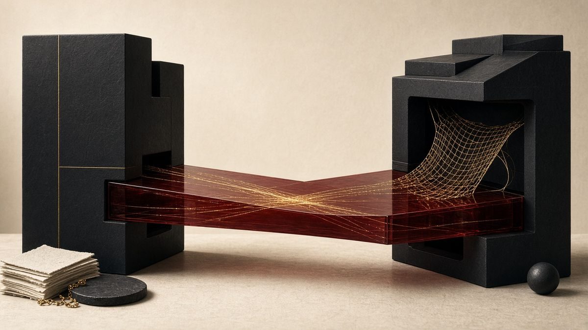
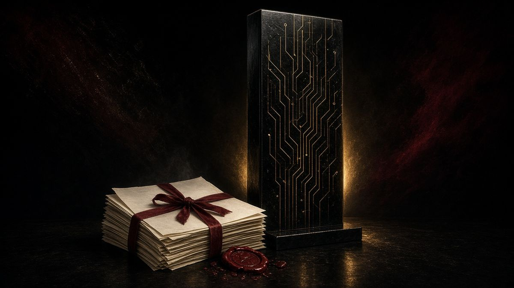

|
|
Issue No. 001 · 24 Nov 2026
|
|
|
|
|
Listen to this issue · ~10 min
|
|
|
|
| | | CUSTODIAN ACCESS | | Claude can read live Schwab client data — if your firm flips the switch |  |
| Image: Illustration · AI-generated for Fiduciary Brief | | ▶ Listen to this story · ~2 min | | The brief: On November 19, Charles Schwab detailed[1] how an authenticated, read-only connector lets Anthropic’s Claude for Financial Advisors[2] query an authorized firm’s own live Schwab Advisor Center data — an offering available to the more than 16,000 independent RIAs Schwab says it serves. | | The details | | • | In a November 19 IMPACT 2026 recap, Alison Dooher, Head of AI for Schwab Advisor Services, wrote that Schwab is the first RIA custodian in Anthropic’s advisor offering[1], following Anthropic’s October 27 update[2] to a September 14 release. | | • | Through that authenticated link, advisors ask Claude natural-language questions on their own book — household analyses, missing beneficiaries, trusted contacts, and RMDs; Anthropic lists Schwab custodial data[2] including balances, positions, transactions, cost basis, alerts, and money-movement status. | | • | Schwab states the connector is currently read-only[1]: “It does not place trades, move money, or make changes to accounts.” Schwab adds that “Opportunities for the connector to carry out safe, secure actions will be explored in the future.” | | • | Under Schwab’s security controls[1], account numbers are masked to the last four digits, Social Security numbers and dates of birth are never retrieved, each firm authorizes enablement first, and security administrators can revoke access at any time. | | • | Anthropic’s single-install plugin also works with eight other partners[2] — BlackRock, Addepar, Envestnet, iCapital, Orion, Wealthbox, Wealth.com, and Zocks — and Anthropic says investment recommendations, client communications, and compliance determinations remain subject to human review and approval. |
| | In its October 23 [[4|Fiscal Year 2027 priorities]] — a staff statement that “creates no new or additional obligations” — Division of Examinations staff flagged third-party client account access alongside growing super intelligence (SI) use. Read the PDF [4] Image: Real image · SEC Division of Examinations, 23 Oct 2026 (U.S. government work) |
|
| | Why it matters for your firm | | If you custody at Schwab, the question is no longer whether AI can read custodial data, but who authorizes that bridge and supervises queries. Our read: treat any read-only connector as a formal vendor-access decision before opening it on live households. If you custody elsewhere, run the same review first. | | |
| | | DISCLOSURE HYGIENE | | Compare your live AI tools against your current brochure | |
| Image: Illustration · AI-generated for Fiduciary Brief | | ▶ Listen to this story · ~1 min | | The brief: An October 14 Frontiers in Artificial Intelligence[3] study of 388 Form ADV Part 2A brochures (from 400 sampled SEC-registered advisers) found 23.7% (22.7% survey-weighted) disclosed AI use versus 27.6% with AI risk language — showing risk phrasing does not prove use, and the gap with Schwab’s ~63% survey figure is a benchmark divergence, not nondisclosure. | STUDY FIGURE 23.7% of 388 Form ADV Part 2A brochures disclosed AI use (22.7% survey-weighted), versus 27.6% with AI risk language |
| | The steps | | 1. | List every tool in use or testing. Record each AI product, connector, or feature across research, client service, operations, and compliance, using the five-label typology[3] separating capability from risk. | | 2. | Separate investment work from back-office work. Note whether a tool touches portfolio construction, research, or advice, or stays in meeting prep and drafting — a line SEC exam staff track in emerging technology priorities[4]. | | 3. | Log data reach and sign-off. Record whether each tool sees live client records, who may run it, and who approves client-facing outputs. | | 4. | Compare against your brochure and website. Set actual workflows beside Form ADV Part 2A and public pages to spot mismatches. | | 5. | Route mismatches to compliance review. Let your chief compliance officer or counsel judge materiality; never rewrite a brochure from this list alone. |
| Compliance check
Date and retain the inventory with your books and records, confirming AI representations and controls match disclosures — a focus SEC exam staff say they assess[4] on automated tools. |
| | |
| | | VENDOR DILIGENCE | | Six diligence questions before an AI tool touches client data | |
| Image: Illustration · AI-generated for Fiduciary Brief | | ▶ Listen to this story · ~1 min | | The brief: Schwab’s security summary[1], Anthropic’s advisor product page[2], and Anthropic’s on-demand webinar outline[12] list vendor-published controls to verify before an AI tool touches client records. | | The questions | | 1. | Who enables and revokes access? Confirm the firm must authorize activation first and a security administrator can revoke access at any time, as Schwab describes[1] for Schwab Advisor Center. | | 2. | Is the link strictly read-only? Get written confirmation of read versus write rights — flagged in Anthropic’s webinar agenda[12] — and check whether it stages tasks, drafts emails, or alters CRM fields. | | 3. | Which fields are masked or excluded? Verify what PII crosses the wire; Schwab says its connector masks account numbers to the last four digits and never retrieves Social Security numbers[1] or dates of birth. | | 4. | What governs retention, training, and vendor access? Require written plan terms on retention, training, and vendor access to your data — items Anthropic’s session[12] lists for diligence. | | 5. | Which tier carries recordkeeping logs? Confirm audit trails fit your policy; Anthropic recommends Enterprise plans for RIAs[2] for recordkeeping audit logs. | | 6. | How does it fit incident response? Under amended Regulation S-P, SEC exam staff plan to evaluate[4] service-provider oversight and customer notification procedures, so map AI vendors before launch. |
| Compliance check
Save written vendor answers, subscription tier, and administrator approval in your third-party diligence file before enabling any live connector. |
| | |
| | | ENFORCEMENT WATCH | | SEC alleges $560 million fraud tied to “AI-driven” trading |  |
| Image: Illustration · AI-generated for Fiduciary Brief | | ▶ Listen to this story · ~2 min | | The brief: On November 20, the SEC announced emergency court relief halting what it alleges is a Ponzi scheme[5] in which Indianapolis-based Backward Hat Capital and its co-founders allegedly raised approximately $560 million from over 2,000 investors using claims of an “AI-driven” algorithm. | | The details | | • | The complaint — which sets out allegations, not proven findings — names Backward Hat Capital, co-founders Phillip Williams and Devin Johnson, Traders Point Capital, and Joseph Anderson; the SEC obtained a temporary restraining order[5] and asset freeze in Southern District of Indiana federal court. | | • | The SEC alleges that since about July 2022, Williams and Johnson lured investors — including Williams’s advisory clients at a former employer[5] — promising crypto-funded FX arbitrage returning at least 6% monthly. | | • | According to the complaint, defendants instead made over $250 million in Ponzi-like payments[5] to previous investors, while Backward Hat, Williams, and Johnson allegedly transferred over $220 million to themselves for exotic cars, homes, unrelated businesses, and Johnson’s gambling. | | • | Johnson also allegedly marketed funds named AI Capital[5] and Traders Point Capital, while Anderson allegedly fabricated at least two “audit reports” and a “quality of earnings” report from a purported independent firm contradicting bank records. | | • | The SEC alleges 1933 and 1934 Act antifraud violations, plus Advisers Act charges against Williams and Traders Point Capital, alongside parallel SDNY U.S. Attorney and CFTC charges[5]. |
| | Why it matters for your firm | | Clients still hear pitches pairing an “AI-driven” label with supposed third-party audits. Our read: use alleged cases like Backward Hat in client education to flag guaranteed monthly returns and unverified audit reports, and review outside-business-activity controls. | | |
| | | AGENCY CAPACITY | | SEC Enforcement adds a Super Intelligence office in FY2026 | |
| Image: Illustration · AI-generated for Fiduciary Brief | | ▶ Listen to this story · ~1 min | | The brief: In its November 10 FY2026 enforcement results[6], the SEC reported 348 actions and $1.095 billion in ordered relief while spotlighting its new Office of Super Intelligence and Analytics. | | The details | | • | The 348 FY2026 actions[6] included 235 standalone cases — two-thirds charging at least one individual — and 113 follow-on proceedings; the Commission also instituted 13 Asia-based issuer trading suspensions. | | • | Monetary relief totaled $1.095 billion ($752 million in disgorgement and prejudgment interest, with $235 million deemed satisfied elsewhere, plus $343 million in penalties), with roughly $731 million returned[6] to over 250,000 harmed investors. | | • | Enforcement launched the Super Intelligence and Analytics office[6] to “force-multiply” resources via SI anomaly detection, faster document and transcript review, and financial-flow analysis; a Retail Fraud Working Group using SI has sparked over a dozen investigations. | | • | The Division updated its Enforcement Manual[6] for the first time since 2017, while the Commission rescinded Rule 202.5(e) and brought settled Custody Rule, Regulation S-P, and Regulation S-ID orders. |
| | Why it matters for your firm | | Enforcement pairs individual accountability with automated pattern detection. Our read: clean records, fast retrieval, and prompt remediation matter more when agency SI tools scan documents, transcripts, and financial flows at scale. | | |
| | | Everything else worth your attention this week, each linked to the primary source. | Illustration | Atkins stresses compliance dialogue. Speaking personally on November 19, SEC Chairman Paul S. Atkins said oversight should not be a “gotcha” exercise, stated Enforcement must not second-guess good-faith judgment calls, and urged scrutiny of how private-asset and pre-IPO products are valued, priced, described, and sold. Source [7] |
| Illustration | Fake crypto fronts charged. On November 19, the SEC charged eight Colorado-based entities, likely run overseas, with allegedly stealing over $37 million via social-media chats, fake SEC certificates, and rotating sham adviser-platform pairs; three entities had Form D or ADV filings removed from the SEC website. Source [8] |
| Illustration | FINRA fines Spartan Capital. FINRA ordered Spartan Capital Securities on November 17 to pay $2.18 million in restitution and a $1 million fine over pre-IPO Atlas Funds with concealed 13%–36% markups, suspended former CEO John Lowry for two years with a $25,000 fine, and barred former acting CCO Kim Monchik; all three consented without admitting or denying the allegations. Source [9] |
| Illustration | SEC proposes CAT overhaul. On November 20, the SEC proposed rescinding Rule 613 and adding Rule 17a-26 to put the Consolidated Audit Trail under direct, congressionally funded SEC control after earlier steps cut projected annual operating costs by over $100 million and ended PII reporting, opening a 60-day comment window after Federal Register publication. Source [10] |
| Illustration | Small-entity definitions updated. On November 4, the SEC adopted Regulatory Flexibility Act amendments updating small-entity definitions for advisers, funds, and BDCs for the first time in nearly 30 years, raising asset thresholds, removing the adviser total-assets test, and adding 10-year inflation updates. Source [11] |
| Illustration | Schwab adds Ester, Nevis. Schwab’s November 19 IMPACT recap highlighted two other AI partnerships for firms that custody at Schwab: Wealth.com’s Ester tax and estate planning experience inside Schwab Advisor Center and a strategic partnership with operating platform Nevis. Source [1] |
| Illustrated video link | VIDEO · Anthropic offers security webinar. Anthropic offers an on-demand webinar with Dor Fledel on Cowork PII handling, read-versus-write controls, audit logs, and plan-level diligence docs; registration is required, and it is the vendor’s own session, not an independent review. Source [12] |
|
| | | Every story this week returns to one discipline: verify what a tool can touch, confirm who approved it, and keep a dated record. Click through the primary sources below, or listen to the audio briefing on your next drive. | | ▶ Listen to the full issue · ~10 min | See you next week,
Rock |
| | Sources | | [1] Charles Schwab (Alison Dooher, Head of AI, Schwab Advisor Services), “The best use of AI in wealth management? Giving advisors more time for clients.” 19 Nov 2026. https://www.aboutschwab.com/mss/story/the-best-use-of-ai-in-wealth-management | | [2] Anthropic, “Claude for Financial Advisors,” 27 Oct 2026 (first published 14 Sep 2026; updated with partner connectors). https://claude.com/resources/articles/claude-for-financial-advisors | | [3] Chincholikar & Chawla, “AI use and risk disclosure by investment advisers,” Frontiers in Artificial Intelligence, 14 Oct 2026. https://www.frontiersin.org/journals/artificial-intelligence/articles/10.3389/frai.2026.1969257/full | | [4] SEC Division of Examinations, “Fiscal Year 2027 Examination Priorities,” 23 Oct 2026. https://www.sec.gov/files/2027-exam-priorities.pdf | | [5] SEC, “SEC Charges Indianapolis-Based Backward Hat Capital and Its Co-Founders With $560 Million Dollar Offering Fraud and Obtains Emergency Relief,” Release No. 2026-116, 20 Nov 2026. https://www.sec.gov/newsroom/press-releases/2026-116-sec-charges-indianapolis-based-backward-hat-capital-its-co-founders-560-million-dollar-offering | | [6] SEC, “SEC Announces Enforcement Annual Results for Fiscal Year 2026,” Release No. 2026-113, 10 Nov 2026. https://www.sec.gov/newsroom/press-releases/2026-113-sec-announces-enforcement-annual-results-fiscal-year-2026 | | [7] SEC Chairman Paul S. Atkins, “Opening Remarks at the 2026 Compliance Outreach Program National Seminar for Investment Advisers and Investment Companies,” 19 Nov 2026. https://www.sec.gov/newsroom/speeches-statements/atkins-remarks-compliance-outreach-program-111926 | | [8] SEC, “SEC: Eight Entities Used Fake Crypto Asset Trading Platforms to Steal More Than $37 Million From U.S. Investors,” Release No. 2026-115, 19 Nov 2026. https://www.sec.gov/newsroom/press-releases/2026-115-sec-eight-entities-used-fake-crypto-asset-trading-platforms-steal-more-37-million-us-investors | | [9] FINRA, “FINRA Orders Spartan Capital Securities to Pay $3.18 Million for Fraud and Private Placement Supervisory Failures,” 17 Nov 2026. https://www.finra.org/media-center/newsreleases/2026/finra-orders-spartan-capital-securities-pay-318-million-fraud-and | | [10] SEC, “SEC Issues Proposal to Restructure the Consolidated Audit Trail,” Release No. 2026-117, 20 Nov 2026. https://www.sec.gov/newsroom/press-releases/2026-117-sec-issues-proposal-restructure-consolidated-audit-trail | | [11] SEC, “SEC Adopts Amendments to Update Definitions of Small Entity for Investment Companies and Investment Advisers,” Release No. 2026-112, 4 Nov 2026. https://www.sec.gov/newsroom/press-releases/2026-112-sec-adopts-amendments-update-definitions-small-entity-investment-companies-investment-advisers | | [12] Anthropic, “Claude for Financial Advisors: Your Cowork Security and Compliance Questions, Answered” (on-demand webinar; registration form). https://claude.com/resources/webinars/claude-financial-advisors-cowork-security-qa | | Images: illustrations are AI-generated for Fiduciary Brief and depict no real people or products. The examination priorities cover is a U.S. government work. |
| |
| This research note is for informational purposes only. It is not investment, legal, compliance, or tax advice, and not a client communication of any advisory firm. |
|
|
|